Last updated: 2025-12-11
Checks: 7 0
Knit directory: DCM_snRNAseq/
This reproducible R Markdown analysis was created with workflowr (version 1.7.2). The Checks tab describes the reproducibility checks that were applied when the results were created. The Past versions tab lists the development history.
Great! Since the R Markdown file has been committed to the Git repository, you know the exact version of the code that produced these results.
Great job! The global environment was empty. Objects defined in the global environment can affect the analysis in your R Markdown file in unknown ways. For reproduciblity it’s best to always run the code in an empty environment.
The command set.seed(20240606) was run prior to running
the code in the R Markdown file. Setting a seed ensures that any results
that rely on randomness, e.g. subsampling or permutations, are
reproducible.
Great job! Recording the operating system, R version, and package versions is critical for reproducibility.
Nice! There were no cached chunks for this analysis, so you can be confident that you successfully produced the results during this run.
Great job! Using relative paths to the files within your workflowr project makes it easier to run your code on other machines.
Great! You are using Git for version control. Tracking code development and connecting the code version to the results is critical for reproducibility.
The results in this page were generated with repository version d953169. See the Past versions tab to see a history of the changes made to the R Markdown and HTML files.
Note that you need to be careful to ensure that all relevant files for
the analysis have been committed to Git prior to generating the results
(you can use wflow_publish or
wflow_git_commit). workflowr only checks the R Markdown
file, but you know if there are other scripts or data files that it
depends on. Below is the status of the Git repository when the results
were generated:
Ignored files:
Ignored: .Rhistory
Ignored: .Rproj.user/
Ignored: output/CellChat/
Ignored: output/Cell_cell_communication_Macrophages/
Ignored: output/Chaffin_2022/
Ignored: output/Comparison_RV_bulk_RNAseq/
Ignored: output/Figures_manuscript/
Ignored: output/Koenig_2022/
Ignored: output/SSc_PAH/
Ignored: output/Variance_partitioning/
Untracked files:
Untracked: .Rprofile
Untracked: Chaffin_wilcox.csv
Untracked: GRCh38-2020-A_build/
Untracked: Koenig_wilcox.csv
Untracked: Pseudobulk_all.csv
Untracked: Pseudobulk_byCellType_wilcox.csv
Untracked: analysis/Biomarkers_selection.Rmd
Untracked: analysis/Chaffin_2022.Rmd
Untracked: analysis/Check_IMC_panel.Rmd
Untracked: analysis/Comparison_RV_bulk_RNAseq.Rmd
Untracked: analysis/DA_DE_all_cell_types_and_parameters.Rmd
Untracked: analysis/DE_Group_all_cell_types.Rmd
Untracked: analysis/EC_capillary_angiogenic_boxplot_stats.csv
Untracked: analysis/Endothelial_cells_Koenig_Reichart.rmd
Untracked: analysis/Endothelial_cells_SGLT2_I.Rmd
Untracked: analysis/Endothelial_cells_subclustering.Rmd
Untracked: analysis/Endothelial_cells_subclustering.rmd
Untracked: analysis/Fibroblasts_DA_DE_26.Rmd
Untracked: analysis/Genes_Luxembourg.Rmd
Untracked: analysis/HC_DEGs_clustering.Rmd
Untracked: analysis/HMEC.Rmd
Untracked: analysis/Koenig_2022.Rmd
Untracked: analysis/Lymphocytes_subclustering.Rmd
Untracked: analysis/Macrophages_subclustering.Rmd
Untracked: analysis/Mass_Spec_RV_dysf.Rmd
Untracked: analysis/Mural_cells_subclustering.Rmd
Untracked: analysis/Olink_RV_dysf.Rmd
Untracked: analysis/Olink_SSc_PAH.Rmd
Untracked: analysis/Olink_SSc_PAH_draft.Rmd
Untracked: analysis/Pseudobulk_all.csv
Untracked: analysis/Pseudobulk_byCellType_facetGrid.pdf
Untracked: analysis/Pseudobulk_byCellType_filtered_wrap3col.pdf
Untracked: analysis/Pseudobulk_byCellType_filtered_wrap3col_proportional.pdf
Untracked: analysis/Pseudobulk_byCellType_wilcox.csv
Untracked: analysis/Pseudobulk_byCellType_wilcox.filtered.csv
Untracked: analysis/Reichart_wilcox.csv
Untracked: analysis/Selection_genes_histology.Rmd
Untracked: analysis/TOM/
Untracked: analysis/UntitledR.R
Untracked: analysis/VennDiagram.2024-09-16_14-12-56.160498.log
Untracked: analysis/VennDiagram.2024-09-16_14-13-17.340014.log
Untracked: analysis/VennDiagram.2024-09-16_14-13-57.942673.log
Untracked: analysis/VennDiagram.2024-09-16_14-22-50.621507.log
Untracked: analysis/VennDiagram.2024-09-16_14-24-47.010131.log
Untracked: analysis/VennDiagram.2024-09-18_11-22-29.278827.log
Untracked: analysis/VennDiagram.2025-03-25_17-41-35.50458.log
Untracked: analysis/VennDiagram.2025-03-25_17-41-41.199096.log
Untracked: analysis/VennDiagram.2025-03-25_17-41-59.64245.log
Untracked: analysis/VennDiagram.2025-03-25_17-45-11.922474.log
Untracked: analysis/VennDiagram.2025-03-25_17-50-36.483812.log
Untracked: analysis/VennDiagram.2025-03-25_17-56-46.244322.log
Untracked: analysis/VennDiagram.2025-03-25_17-58-30.74362.log
Untracked: analysis/VennDiagram.2025-03-26_15-54-09.244636.log
Untracked: analysis/VennDiagram.2025-06-11_14-53-30.499963.log
Untracked: analysis/ec_Reichart_logCPM.csv
Untracked: analysis/omnipathr-log/
Untracked: code/Add_metadata.R
Untracked: code/Check DYSF.R
Untracked: code/Clustering_genes.R
Untracked: code/DE_5_percent.Rmd
Untracked: code/DE_5_percent.html
Untracked: code/DE_5_percent/
Untracked: code/DE_CM_test1.R
Untracked: code/DE_no_401.Rmd
Untracked: code/DE_no_401.html
Untracked: code/DE_no_401/
Untracked: code/Differential abundance test1.R
Untracked: code/Differential_Expression_edgeR_All.Rmd
Untracked: code/Differential_Expression_edgeR_All_2.Rmd
Untracked: code/Differential_Expression_edgeR_All_2.html
Untracked: code/Differential_Expression_edgeR_All_Age.Rmd
Untracked: code/Differential_Expression_edgeR_All_Age_2.Rmd
Untracked: code/Differential_Expression_edgeR_All_Age_2.html
Untracked: code/Differential_Expression_edgeR_All_groups.Rmd
Untracked: code/Differential_Expression_edgeR_All_groups.html
Untracked: code/Differential_Expression_edgeR_All_groups_2.Rmd
Untracked: code/Differential_Expression_edgeR_All_groups_2.html
Untracked: code/Differential_Expression_edgeR_All_groups_3.Rmd
Untracked: code/Differential_Expression_edgeR_All_groups_3.html
Untracked: code/PCA and CCA analysis test.R
Untracked: code/Pseudobulk DCM HC.R
Untracked: code/Published_heart_datasets_RV_vs_LV.Rmd
Untracked: code/QC_integration_annotation_orig.Rmd
Untracked: code/Removed_chunks.Rmd
Untracked: code/UpSet_plot_DEGs.Rmd
Untracked: code/Volcano_highlighted_genes.R
Untracked: code/ezInteractiveTable.Rmd
Untracked: code/ezInteractiveTable.html
Untracked: code/old.R
Untracked: data/Cellbender_output/
Untracked: data/Cellranger_output/
Untracked: data/DCM_Clinical_data.xlsx
Untracked: data/DCM_Clinical_data_26.xlsx
Untracked: data/DCM_Clinical_data_30.xlsx
Untracked: data/HMEC_RNAseq/
Untracked: data/Heart_specific_proteome.xlsx
Untracked: data/Homo_sapiens.GRCh38.93.gtf
Untracked: data/Human_plasma_proteome.xlsx
Untracked: data/Massons_quantification.xlsx
Untracked: data/Published_datasets/
Untracked: data/Raw/
Untracked: data/SSc-PAH/
Untracked: data/gencode.v46.chr_patch_hapl_scaff.annotation.gtf
Untracked: data/gencode.v46.chr_patch_hapl_scaff.basic.annotation.gtf
Untracked: data/refdata-gex-GRCh38-2020-A/
Untracked: omnipathr-log/
Untracked: output/Biomarkers_selection/
Untracked: output/CM_lncRNAs/
Untracked: output/Cardiomyocytes_DA_DE/
Untracked: output/Cardiomyocytes_subclustering/
Untracked: output/Cardiomyocytes_subclustering_26/
Untracked: output/Cell_cell_communication/
Untracked: output/Cell_cell_communication_LV/
Untracked: output/Cell_cell_communication_LV2/
Untracked: output/Cell_cycle/
Untracked: output/Check_IMC_panel/
Untracked: output/Comparison_LV/
Untracked: output/DA_DE_all_cell_types_and_parameters/
Untracked: output/DE_Fibrosis_all_cell_types/
Untracked: output/DE_Group_all_cell_types/
Untracked: output/DE_all_cell_types_mPAP/
Untracked: output/DE_mPAP_all_cell_types/
Untracked: output/Differential_expression_edgeR_All/
Untracked: output/Differential_expression_edgeR_All_Age/
Untracked: output/Dysferlin/
Untracked: output/Endothelial_cells_Koenig_Reichart/
Untracked: output/Endothelial_cells_SGLT2_I/
Untracked: output/Endothelial_cells_published_datasets/
Untracked: output/Endothelial_cells_subclustering/
Untracked: output/Fibroblasts_DA_DE_26/
Untracked: output/Fibroblasts_subclustering/
Untracked: output/Genes_Luxembourg/
Untracked: output/HC_DEGs_clustering/
Untracked: output/HMEC/
Untracked: output/LV_Klaudia/
Untracked: output/Lymphocytes_subclustering/
Untracked: output/Macrophages_subclustering/
Untracked: output/Mass_Spec_RV_dysf/
Untracked: output/Mural_cells_subclustering/
Untracked: output/Olink_RV_dysf/
Untracked: output/Olink_SSc_PAH/
Untracked: output/Olink_SSc_PAH_draft/
Untracked: output/QC_integration_annotation/
Untracked: output/Reichart_DE_DCMvsHC/
Untracked: output/Selection_genes_histology/
Untracked: output/UntitledR.R
Untracked: redsfewfref.R
Untracked: reference_sources/
Untracked: renv.lock
Untracked: renv/
Unstaged changes:
Modified: analysis/CM_lncRNAs.Rmd
Modified: analysis/Cardiomyocytes_DA_DE.Rmd
Modified: analysis/Comparison_LV.Rmd
Modified: analysis/DE_mPAP_all_cell_types.Rmd
Deleted: analysis/Differential_Expression_edgeR_All.Rmd
Deleted: analysis/Differential_Expression_edgeR_All_Age.Rmd
Modified: analysis/Dysferlin.Rmd
Modified: analysis/Endothelial_cells_published_datasets.rmd
Modified: analysis/Fibroblasts_subclustering.Rmd
Modified: analysis/Genes_Luxembourg_2.Rmd
Modified: analysis/LV_Klaudia.Rmd
Modified: analysis/Reichart_DE_DCMvsHC.Rmd
Modified: analysis/SSc_PAH.Rmd
Note that any generated files, e.g. HTML, png, CSS, etc., are not included in this status report because it is ok for generated content to have uncommitted changes.
These are the previous versions of the repository in which changes were
made to the R Markdown (analysis/Cell_cycle.Rmd) and HTML
(docs/Cell_cycle.html) files. If you’ve configured a remote
Git repository (see ?wflow_git_remote), click on the
hyperlinks in the table below to view the files as they were in that
past version.
| File | Version | Author | Date | Message |
|---|---|---|---|---|
| Rmd | d953169 | GinoBonazza | 2025-12-11 | wflow_publish("analysis/Cell_cycle.Rmd") |
| html | dfbe17f | GinoBonazza | 2025-12-10 | Build site. |
| Rmd | 6f5d839 | GinoBonazza | 2025-12-10 | wflow_publish("analysis/Cell_cycle.Rmd") |
# Get current file name to make folder
current_file <- "Cell_cycle"
# Load libraries
library(here)
library(readr)
library(readxl)
library(Seurat)
library(DropletUtils)
library(Matrix)
library(scDblFinder)
library(scCustomize)
library(dplyr)
library(ggplot2)
library(magrittr)
library(tidyverse)
library(reshape2)
library(S4Vectors)
library(SingleCellExperiment)
library(pheatmap)
library(png)
library(gridExtra)
library(knitr)
library(scales)
library(RColorBrewer)
library(Matrix.utils)
library(tibble)
library(ggplot2)
library(scater)
library(patchwork)
library(statmod)
library(clustree)
library(harmony)
library(gprofiler2)
library(clusterProfiler)
library(org.Hs.eg.db)
library(AnnotationHub)
library(ReactomePA)
library(statmod)
library(edgeR)
library(speckle)
library(EnhancedVolcano)
library(decoupleR)
library(OmnipathR)
library(dorothea)
library(enrichplot)
library(png)
library(reactable)
library(UpSetR)
library(ComplexHeatmap)
library(msigdbr)
library(simplifyEnrichment)
library(miloR)
library(igraph)
library(gridExtra)
library(ggpubr)
library(biomaRt)
library(GGally)
library(rtracklayer)
library(cowplot)
library(anndata)
#Output paths
output_dir_data <- here::here("output", current_file)
if (!dir.exists(output_dir_data)) dir.create(output_dir_data)
if (!dir.exists(here::here("docs", "figure"))) dir.create(here::here("docs", "figure"))
output_dir_figs <- here::here("docs", "figure", paste0(current_file, ".Rmd"))
if (!dir.exists(output_dir_figs)) dir.create(output_dir_figs)Reichart <- readRDS("/scratch/gbonaz/Heart_datasets/Reichart_2022/DCM_ACM_heart_cell_atlas.rds")
Reichart_gene_names <- data.frame(
ensembl_id = rownames(Reichart),
gene_symbol = Reichart@assays[["RNA"]]@meta.features$feature_name
)
rownames(Reichart@assays[["RNA"]]@data) <- Reichart@assays[["RNA"]]@meta.features$feature_name
rownames(Reichart@assays[["RNA"]]@counts) <- Reichart@assays[["RNA"]]@meta.features$feature_name
write.csv(Reichart_gene_names, file = here::here(output_dir_data, "Reichart_gene_names.csv"), quote=F, row.names = F)Clinical_data <- readxl::read_excel("/scratch/gbonaz/Heart_datasets/Reichart_2022/Reichart_et_al_Science_2022_Selected_clinical_info.xlsx")
add_metadata <- left_join(Reichart[["donor_id"]], Clinical_data)
row.names(add_metadata) <- row.names(Reichart[[]])
Reichart <- AddMetaData(Reichart, metadata = add_metadata)
rm(add_metadata, Clinical_data)
Reichart@meta.data[Reichart@meta.data$disease == "normal", "Group"] = "HC"
Reichart@meta.data[Reichart@meta.data$disease == "dilated cardiomyopathy", "Group"] = "DCM"
Reichart$Sample <- Reichart$donor_ids.genes <- cc.genes$s.genes
g2m.genes <- cc.genes$g2m.genes
Reichart <- CellCycleScoring(Reichart, s.features = s.genes, g2m.features = g2m.genes)Reichart_CM <- subset(Reichart, disease %in% c("dilated cardiomyopathy", "normal") & cell_type == "cardiac muscle cell")
Reichart_CM$Group <- factor(Reichart_CM$Group, levels = c("HC", "DCM"))props <- getTransformedProps(Reichart_CM$Phase, Reichart_CM$Group, transform="logit")
par(mar = c(7, 5, 1, 10), xpd = TRUE)
barplot(props$Proportions, legend = FALSE, ylab = "Proportions", col = c("#F8766D", "#00BA38", "#619CFF"), cex.names = 2, las = 2, font.lab = 2, font.axis = 2, cex.axis = 1.2, cex.lab = 2)
legend("topright", inset = c(-0.9, 0.3), legend = rownames(props$Proportions), fill = c("#F8766D", "#00BA38", "#619CFF"), bty = "n", cex = 2)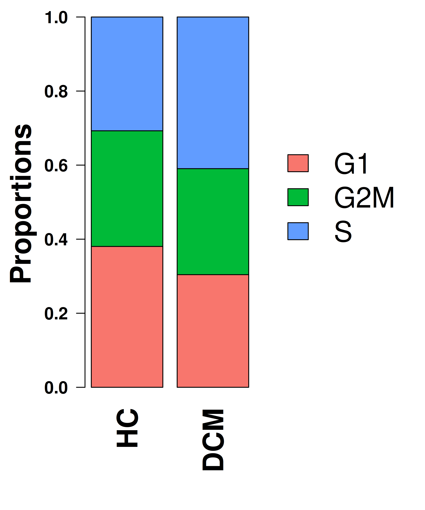
| Version | Author | Date |
|---|---|---|
| dfbe17f | GinoBonazza | 2025-12-10 |
props <- getTransformedProps(Reichart_CM$Phase, Reichart_CM$Region_x, transform="logit")
par(mar = c(7, 5, 1, 10), xpd = TRUE)
barplot(props$Proportions, legend = FALSE, ylab = "Proportions", col = c("#F8766D", "#00BA38", "#619CFF"), cex.names = 2, las = 2, font.lab = 2, font.axis = 2, cex.axis = 1.2, cex.lab = 2)
legend("topright", inset = c(-0.9, 0.3), legend = rownames(props$Proportions), fill = c("#F8766D", "#00BA38", "#619CFF"), bty = "n", cex = 2)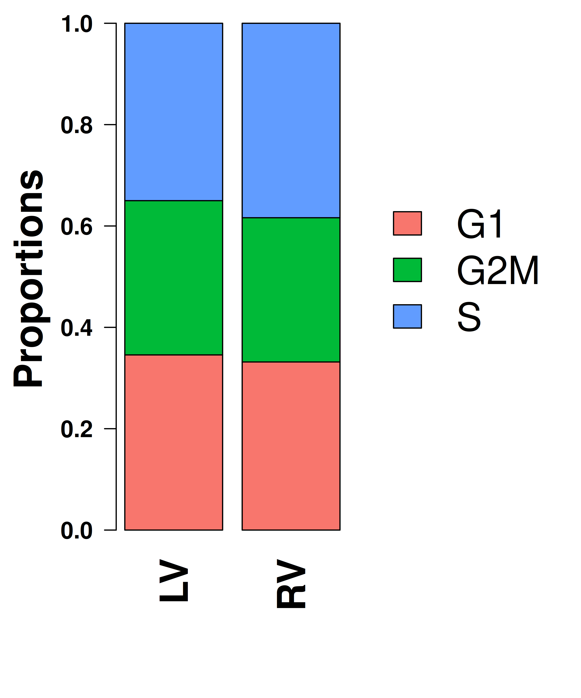
| Version | Author | Date |
|---|---|---|
| dfbe17f | GinoBonazza | 2025-12-10 |
Reichart_CM$GroupRegion <- paste0(Reichart_CM$Group, "_", Reichart_CM$Region_x)
Reichart_CM$GroupRegion <- factor(Reichart_CM$GroupRegion, levels = c("HC_LV", "HC_RV", "DCM_LV", "DCM_RV"))
props <- getTransformedProps(
Reichart_CM$Phase,
Reichart_CM$GroupRegion,
transform = "logit"
)
par(mar = c(8, 5, 1, 10), xpd = TRUE)
barplot(
props$Proportions,
legend = FALSE,
ylab = "Proportions",
col = c("#F8766D", "#00BA38", "#619CFF"),
cex.names = 2,
las = 2,
font.lab = 2,
font.axis = 2,
cex.axis = 1.2,
cex.lab = 2,
beside = FALSE
)
legend(
"topright",
inset = c(-0.6, 0.3),
legend = rownames(props$Proportions),
fill = c("#F8766D", "#00BA38", "#619CFF"),
bty = "n",
cex = 2
)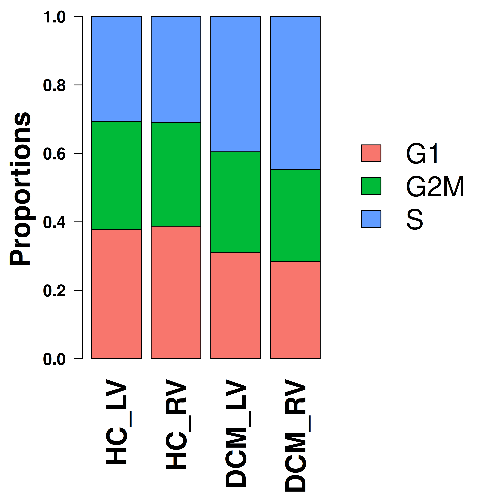
| Version | Author | Date |
|---|---|---|
| dfbe17f | GinoBonazza | 2025-12-10 |
Reichart_CM$GroupRegion <- paste0(Reichart_CM$Group, "_", Reichart_CM$Region_x)
Reichart_CM$GroupRegion <- factor(Reichart_CM$GroupRegion, levels = c("HC_LV", "HC_RV", "DCM_LV", "DCM_RV"))
# Per-patient percentages
df_patient_phase <- Reichart_CM@meta.data %>%
group_by(donor_id, GroupRegion, Phase) %>%
summarise(n = n(), .groups = "drop") %>%
group_by(donor_id, GroupRegion) %>% # <- fix: include GroupRegion
mutate(pct = n / sum(n) * 100) %>%
ungroup()
df_patient_phase$GroupRegion <- factor(
df_patient_phase$GroupRegion,
levels = c("HC_LV", "HC_RV", "DCM_LV", "DCM_RV")
)
comparisons <- list(
c("HC_RV", "DCM_RV"),
c("HC_LV", "DCM_LV"),
c("HC_RV", "HC_LV"),
c("DCM_RV", "DCM_LV")
)plots <- list()
for (ph in c("G1", "S", "G2M")) {
df_sub <- df_patient_phase %>% filter(Phase == ph)
p <- ggplot(df_sub, aes(GroupRegion, pct, fill = GroupRegion)) +
geom_boxplot(alpha = 0.7, outlier.shape = NA) +
geom_jitter(width = 0.15, size = 2, alpha = 0.8) +
stat_compare_means(
comparisons = comparisons,
method = "wilcox.test",
hide.ns = FALSE,
label = "p.signif"
) +
labs(
title = paste0("Phase: ", ph),
y = "Percentage of cells",
x = ""
) +
theme_bw(base_size = 16) +
theme(
legend.position = "none",
plot.title = element_text(face = "bold", size = 18),
axis.text.x = element_text(angle = 45, hjust = 1)
)
plots[[ph]] <- p
}
plots$G1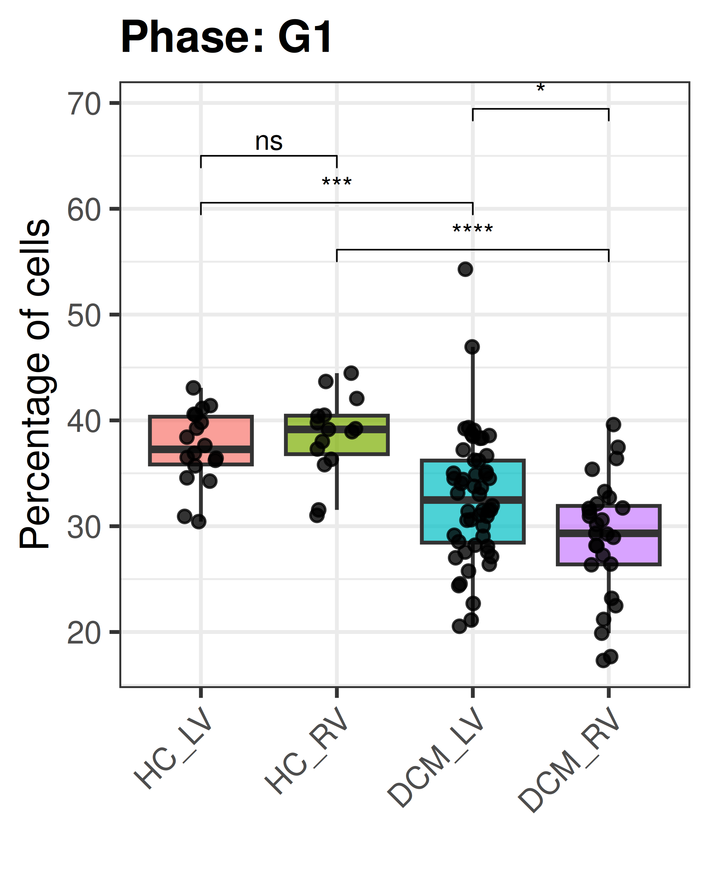
| Version | Author | Date |
|---|---|---|
| dfbe17f | GinoBonazza | 2025-12-10 |
$S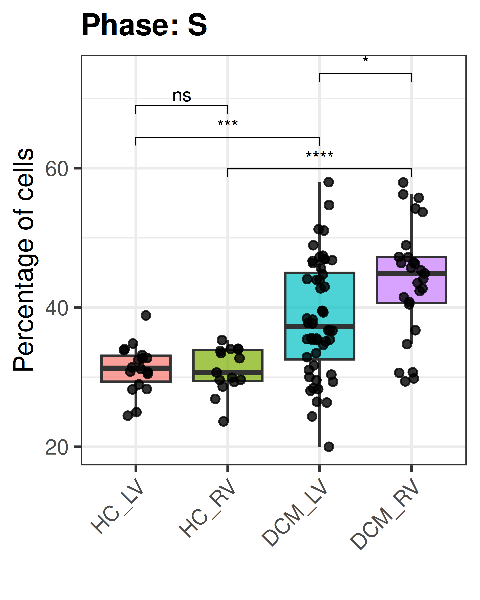
| Version | Author | Date |
|---|---|---|
| dfbe17f | GinoBonazza | 2025-12-10 |
$G2M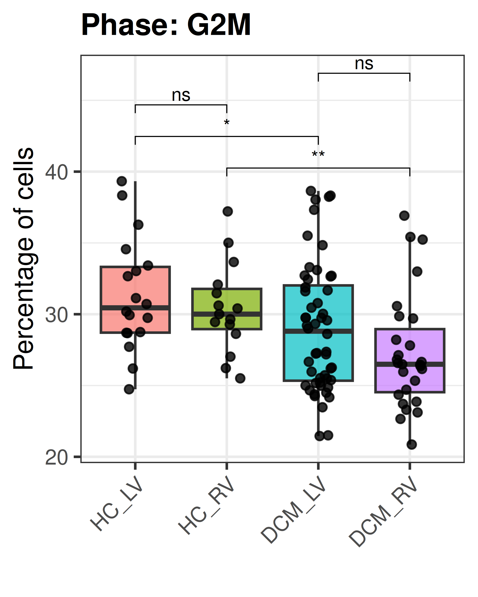
| Version | Author | Date |
|---|---|---|
| dfbe17f | GinoBonazza | 2025-12-10 |
#data <- anndata::read_h5ad("/scratch/gbonaz/Heart_datasets/Reichart_2022/4e0a1252-c993-42ae-a0a8-e6cf3f02bfdb.h5ad")
#seurat_obj <- CreateSeuratObject(counts = t(as.matrix(data$X)), meta.data = data$obs)
#saveRDS(seurat_obj,"/scratch/gbonaz/Heart_datasets/Reichart_2022/Reichart_CM.rds")
seurat_obj <- readRDS("/scratch/gbonaz/Heart_datasets/Reichart_2022/Reichart_CM.rds")cell_type_cols <- c("#d05050", "#33A02C", "#1F78B4", "#CAB2D6", "#FF7F00", "#B2DF8A", "#B15928", "#FFD000", "#FA95C0", "#FDBF6F", "#6A3D9A", "#7aCDF9", "#E6E600") p <- DimPlot(
Reichart,
group.by = "cell_type",
reduction = "umap",
label = FALSE,
shuffle=T,
pt.size = 1.2
) +
NoLegend() +
theme(axis.text = element_text(size = 8, face = "bold"),
axis.title = element_text(size = 12, face = "bold"),
plot.title = element_blank())
LabelClusters(p,
id = "cell_type",
fontface = "bold",
size = 5.8,
repel = TRUE)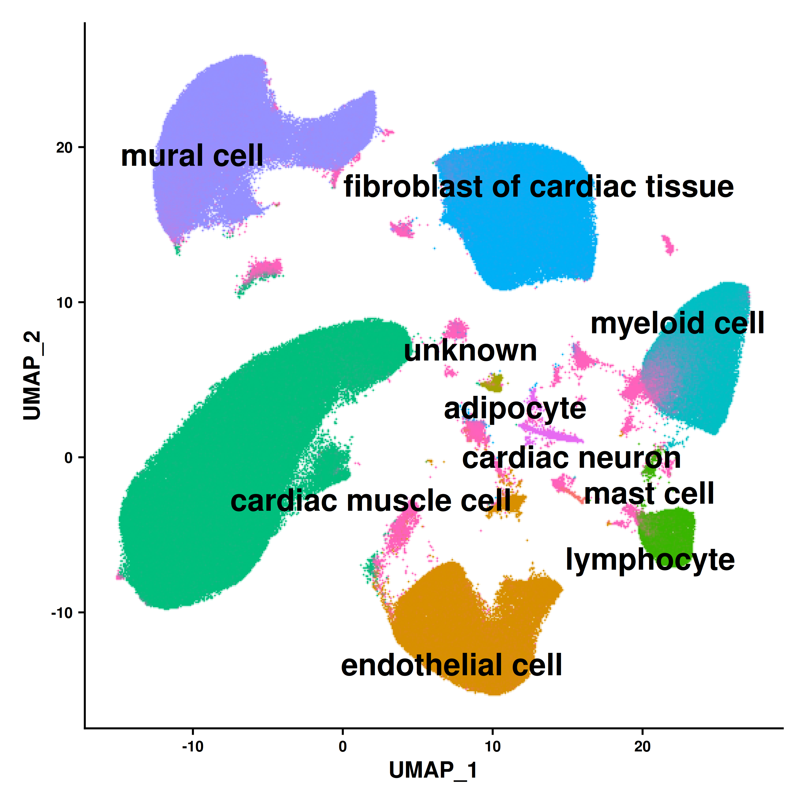
# DCM cardiomyocytes only
Reichart_CM_DCM <- subset(
Reichart_CM,
Group == "DCM" & cell_type == "cardiac muscle cell"
)
make_state_phase_df <- function(seu_obj) {
meta <- seu_obj@meta.data
meta %>%
dplyr::filter(!is.na(donor_id),
!is.na(cell_states),
!is.na(Phase),
!is.na(Region_x)) %>%
# cells per donor × region × state × phase
group_by(donor_id, Region_x, cell_states, Phase) %>%
summarise(n_phase = n(), .groups = "drop") %>%
# total cells per donor × region × state
group_by(donor_id, Region_x, cell_states) %>%
dplyr::mutate(n_total_state = sum(n_phase),
pct_phase_in_state = n_phase / n_total_state * 100) %>%
ungroup()
}
df_state_phase <- make_state_phase_df(Reichart_CM_DCM)
# Make factors (optional but safer)
df_state_phase$Phase <- factor(df_state_phase$Phase, levels = c("G1", "S", "G2M"))
df_state_phase$Region_x <- factor(df_state_phase$Region_x, levels = c("LV", "RV"))
df_state_phase$cell_states <- factor(df_state_phase$cell_states)Reichart_CM_DCM_RV <- subset(Reichart_CM_DCM, Region_x == "RV")
Reichart_CM_DCM_LV <- subset(Reichart_CM_DCM, Region_x == "LV")
Reichart_CM_DCM_RV$cell_states <- droplevels(Reichart_CM_DCM_RV$cell_states)
Reichart_CM_DCM_LV$cell_states <- droplevels(Reichart_CM_DCM_LV$cell_states)props <- getTransformedProps(
Reichart_CM_DCM_RV$Phase,
Reichart_CM_DCM_RV$cell_states,
transform = "logit"
)
par(mar = c(8, 5, 4, 10), xpd = TRUE)
barplot(
props$Proportions,
legend = FALSE,
ylab = "Proportions",
col = c("#F8766D", "#00BA38", "#619CFF"),
cex.names = 2,
las = 2,
font.lab = 2,
font.axis = 2,
cex.axis = 1.2,
cex.lab = 2,
beside = FALSE
)
title(
main = "RV",
cex.main = 2.5, # bigger title
line = 1 # move it further up (increase for higher)
)
legend(
"topright",
inset = c(-0.6, 0.3),
legend = rownames(props$Proportions),
fill = c("#F8766D", "#00BA38", "#619CFF"),
bty = "n",
cex = 2
)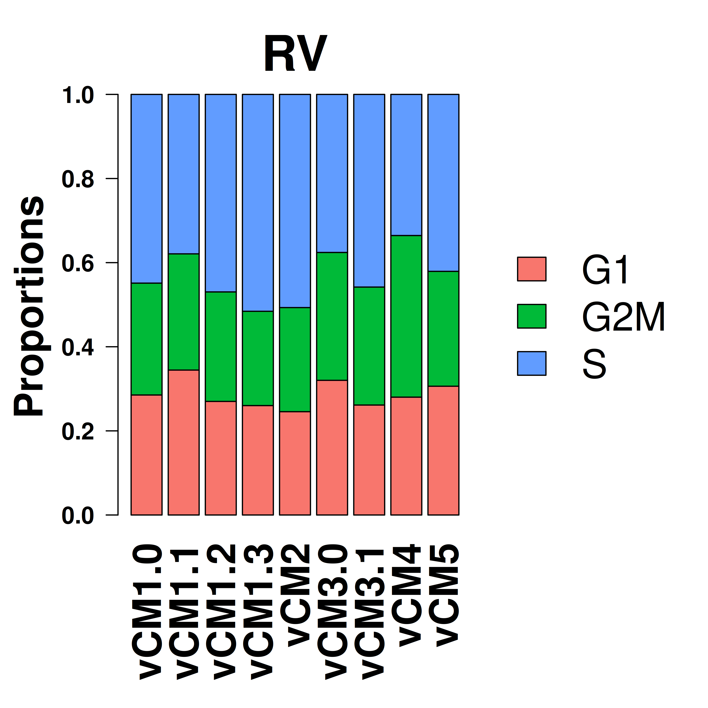
props <- getTransformedProps(
Reichart_CM_DCM_LV$Phase,
Reichart_CM_DCM_LV$cell_states,
transform = "logit"
)
par(mar = c(8, 5, 4, 10), xpd = TRUE)
barplot(
props$Proportions,
legend = FALSE,
ylab = "Proportions",
col = c("#F8766D", "#00BA38", "#619CFF"),
cex.names = 2,
las = 2,
font.lab = 2,
font.axis = 2,
cex.axis = 1.2,
cex.lab = 2,
beside = FALSE
)
title(
main = "LV",
cex.main = 2.5, # bigger title
line = 1 # move it further up (increase for higher)
)
legend(
"topright",
inset = c(-0.6, 0.3),
legend = rownames(props$Proportions),
fill = c("#F8766D", "#00BA38", "#619CFF"),
bty = "n",
cex = 2
)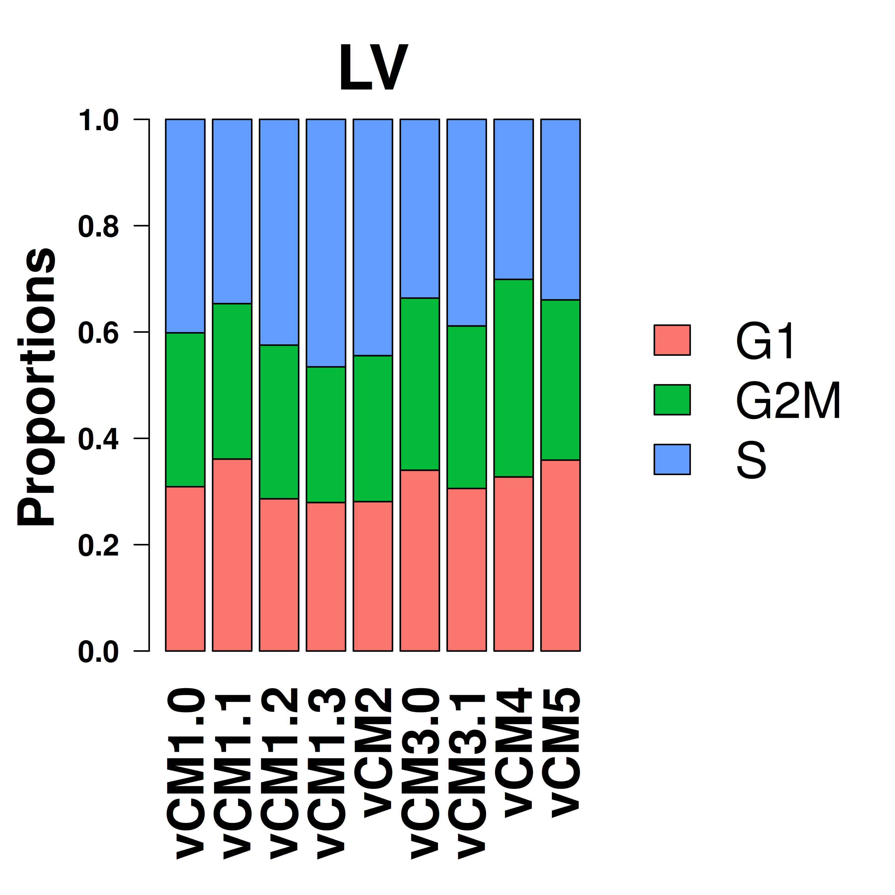
compare_state_vs_rest <- function(df, region) {
df_region <- df %>% filter(Region_x == region)
all_states <- levels(df_region$cell_states)
all_phases <- levels(df_region$Phase)
res_list <- list()
for (ph in all_phases) {
df_ph <- df_region %>% filter(Phase == ph)
for (st in all_states) {
# target state
df_target <- df_ph %>%
filter(cell_states == st) %>%
dplyr::select(donor_id, pct_phase_in_state) %>%
rename(target_pct = pct_phase_in_state)
# "other" = all remaining states pooled
df_other <- df_ph %>%
filter(cell_states != st) %>%
group_by(donor_id) %>%
summarise(
n_phase_other = sum(n_phase),
n_total_other = sum(n_total_state), # total cells in non-target states
other_pct = (n_phase_other / n_total_other) * 100,
.groups = "drop"
)
# merge; keep donors having both
df_pair <- inner_join(df_target, df_other, by = "donor_id")
if (nrow(df_pair) < 3) {
# not enough donors with both target and other -> skip / NA
res_list[[length(res_list) + 1]] <- data.frame(
Region = region,
Phase = ph,
cell_states = st,
n_donors = nrow(df_pair),
median_target_pct = NA_real_,
median_other_pct = NA_real_,
p_value = NA_real_
)
next
}
wtest <- suppressWarnings(
wilcox.test(df_pair$target_pct, df_pair$other_pct, paired = TRUE)
)
res_list[[length(res_list) + 1]] <- data.frame(
Region = region,
Phase = ph,
cell_states = st,
n_donors = nrow(df_pair),
median_target_pct = median(df_pair$target_pct),
median_other_pct = median(df_pair$other_pct),
p_value = wtest$p.value
)
}
}
res <- bind_rows(res_list) %>%
mutate(p_adj = p.adjust(p_value, method = "fdr"))
return(res)
}
res_lv <- compare_state_vs_rest(df_state_phase, region = "LV")
res_rv <- compare_state_vs_rest(df_state_phase, region = "RV")
# Have a look
res_lv %>% arrange(Phase, p_adj) %>% head() Region Phase cell_states n_donors median_target_pct median_other_pct
1 LV G1 vCM1.1 49 37.17949 32.61614
2 LV G1 vCM1.2 52 29.19864 32.91840
3 LV G1 vCM3.0 51 35.29412 32.40741
4 LV G1 vCM2 52 29.81333 33.01527
5 LV G1 vCM1.3 51 29.53368 32.52830
6 LV G1 vCM5 51 36.84211 32.45614
p_value p_adj
1 6.147381e-09 1.268745e-07
2 5.392580e-06 2.426661e-05
3 1.874718e-04 5.061738e-04
4 5.122096e-04 1.152472e-03
5 3.010123e-03 5.805237e-03
6 9.291532e-03 1.672476e-02res_rv %>% arrange(Phase, p_adj) %>% head() Region Phase cell_states n_donors median_target_pct median_other_pct
1 RV G1 vCM2 27 24.35597 30.83004
2 RV G1 vCM1.1 27 34.13655 28.97311
3 RV G1 vCM3.0 27 33.33333 29.05325
4 RV G1 vCM1.3 27 26.08696 29.33333
5 RV G1 vCM4 24 30.00000 30.46176
6 RV G1 vCM5 23 33.33333 29.46429
p_value p_adj
1 0.0002363175 0.001686171
2 0.0004787445 0.002585220
3 0.0299049914 0.080743477
4 0.0772257745 0.139006394
5 0.1688096523 0.268109448
6 0.1601049900 0.268109448make_boxplot_phase_region <- function(df_state_phase, res_table,
region, phase_label,
sig_level = 0.05) {
# data for this region & phase
df_plot <- df_state_phase %>%
filter(Region_x == region, Phase == phase_label)
# significance for this region & phase
res_sub <- res_table %>%
filter(Region == region, Phase == phase_label) %>%
mutate(
label = case_when(
is.na(p_adj) ~ "",
p_adj < 0.001 ~ "***",
p_adj < 0.01 ~ "**",
p_adj < sig_level ~ "*",
TRUE ~ ""
)
) %>%
filter(label != "")
# y-position for asterisks: a bit above the max of each state
if (nrow(res_sub) > 0) {
label_df <- df_plot %>%
group_by(cell_states) %>%
summarise(y_max = max(pct_phase_in_state), .groups = "drop") %>%
inner_join(res_sub, by = "cell_states") %>%
mutate(y_pos = y_max * 1.05)
} else {
label_df <- NULL
}
p <- ggplot(df_plot, aes(x = cell_states, y = pct_phase_in_state, fill = cell_states)) +
geom_boxplot(alpha = 0.7, outlier.shape = NA) +
geom_jitter(width = 0.15, size = 1.8, alpha = 0.8) +
labs(
title = paste0(region, " – ", phase_label),
x = "",
y = "Percentage of cells in phase (per donor)"
) +
theme_bw(base_size = 14) +
theme(
legend.position = "none",
plot.title = element_text(face = "bold", size = 16),
axis.text.x = element_text(angle = 45, hjust = 1)
)
if (!is.null(label_df) && nrow(label_df) > 0) {
p <- p +
geom_text(
data = label_df,
aes(x = cell_states, y = y_pos, label = label),
vjust = 0,
size = 5
) +
expand_limits(y = max(label_df$y_pos) * 1.1)
}
return(p)
}
phases <- c("G1", "S", "G2M")
# LV plots
plots_lv <- lapply(
phases,
function(ph) make_boxplot_phase_region(df_state_phase, res_lv, region = "LV", phase_label = ph)
)
names(plots_lv) <- phases
# RV plots
plots_rv <- lapply(
phases,
function(ph) make_boxplot_phase_region(df_state_phase, res_rv, region = "RV", phase_label = ph)
)
names(plots_rv) <- phases
# Print individually if you want
plots_lv$G1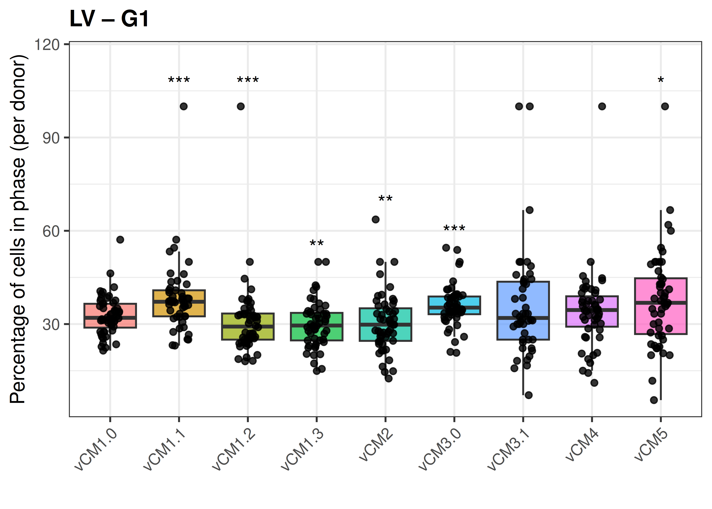
plots_lv$S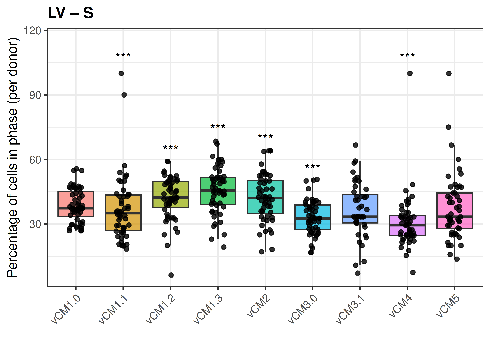
plots_lv$G2M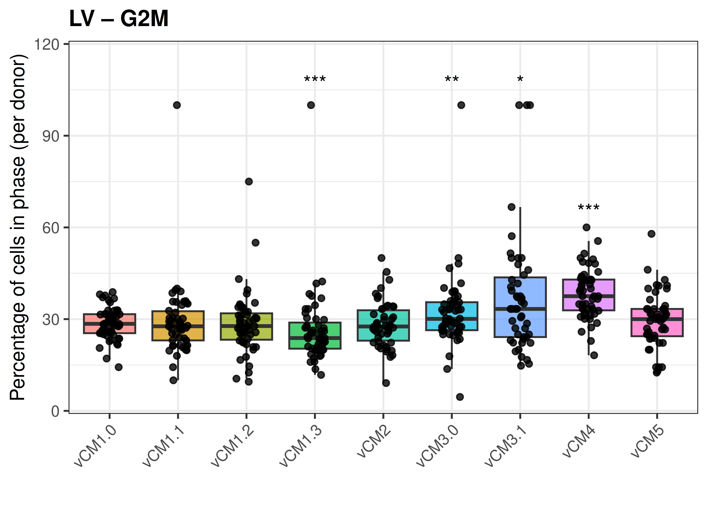
plots_rv$G1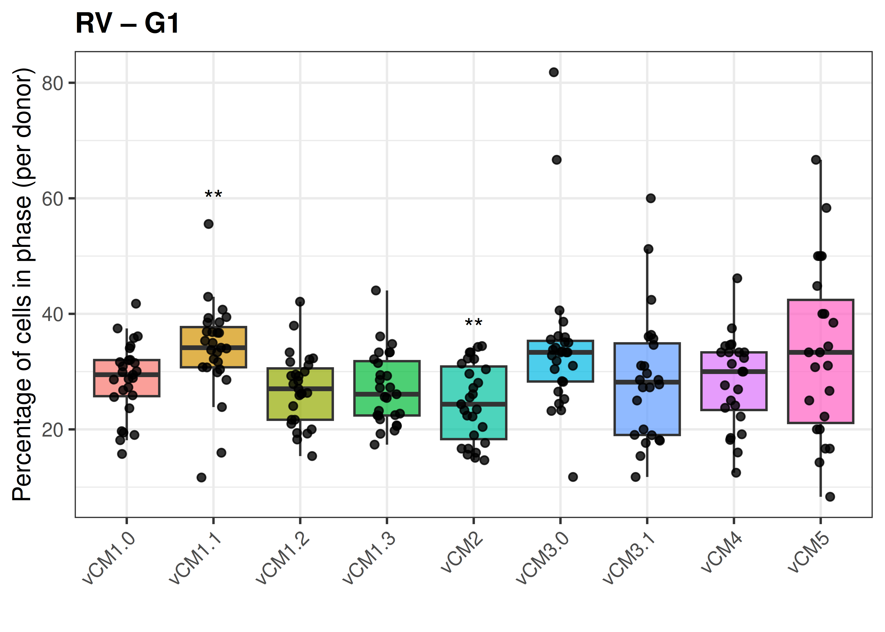
plots_rv$S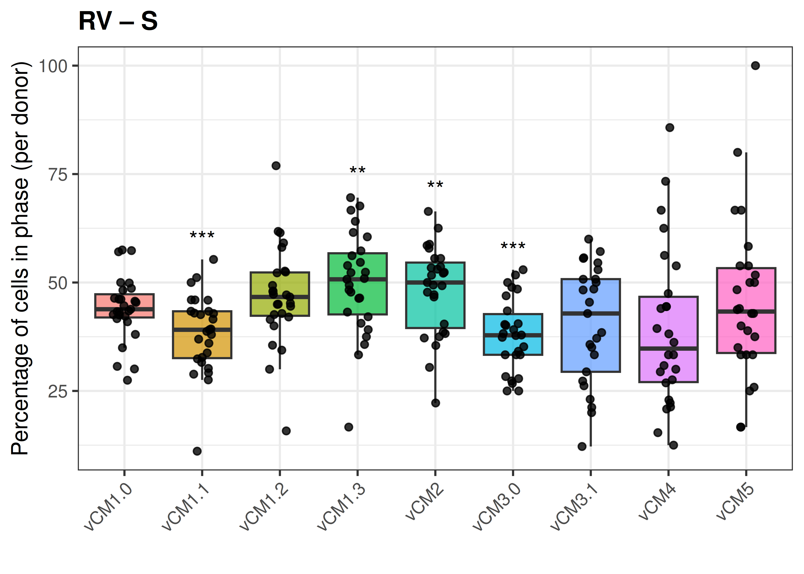
plots_rv$G2M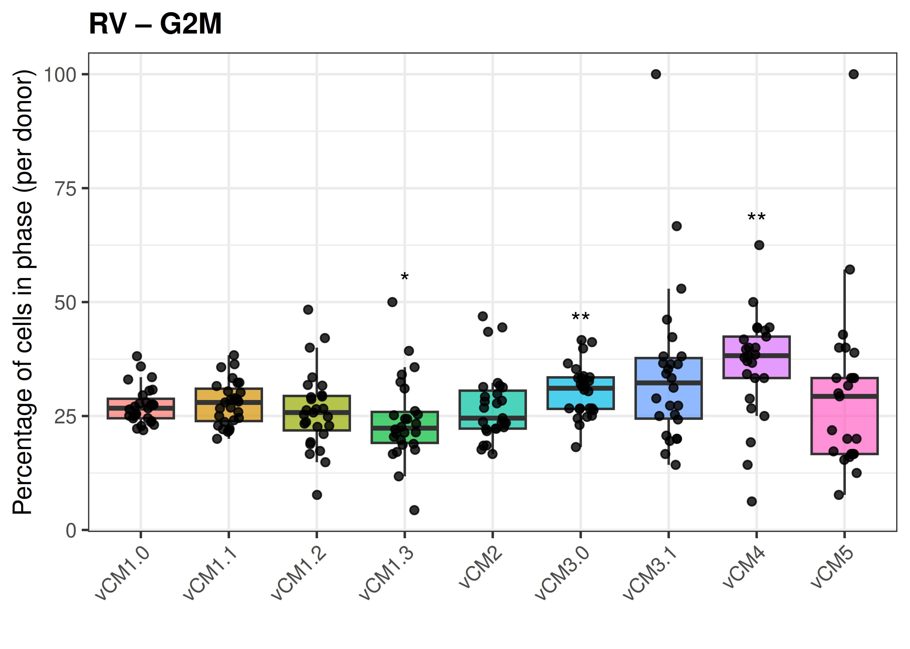
sessionInfo()R version 4.5.2 (2025-10-31)
Platform: x86_64-pc-linux-gnu
Running under: Ubuntu 24.04.3 LTS
Matrix products: default
BLAS: /usr/lib/x86_64-linux-gnu/openblas-pthread/libblas.so.3
LAPACK: /usr/lib/x86_64-linux-gnu/openblas-pthread/libopenblasp-r0.3.26.so; LAPACK version 3.12.0
locale:
[1] LC_CTYPE=en_US.UTF-8 LC_NUMERIC=C
[3] LC_TIME=en_US.UTF-8 LC_COLLATE=en_US.UTF-8
[5] LC_MONETARY=en_US.UTF-8 LC_MESSAGES=en_US.UTF-8
[7] LC_PAPER=en_US.UTF-8 LC_NAME=C
[9] LC_ADDRESS=C LC_TELEPHONE=C
[11] LC_MEASUREMENT=en_US.UTF-8 LC_IDENTIFICATION=C
time zone: Etc/UTC
tzcode source: system (glibc)
attached base packages:
[1] grid stats4 stats graphics grDevices datasets utils
[8] methods base
other attached packages:
[1] anndata_0.8.0 cowplot_1.2.0
[3] rtracklayer_1.70.0 GGally_2.4.0
[5] biomaRt_2.66.0 ggpubr_0.6.2
[7] igraph_2.2.1 miloR_2.6.0
[9] simplifyEnrichment_2.4.0 msigdbr_25.1.1
[11] ComplexHeatmap_2.26.0 UpSetR_1.4.0
[13] reactable_0.4.5 enrichplot_1.30.4
[15] dorothea_1.22.0 OmnipathR_3.18.2
[17] decoupleR_2.16.0 EnhancedVolcano_1.29.1
[19] ggrepel_0.9.6 speckle_1.10.0
[21] edgeR_4.8.0 limma_3.66.0
[23] ReactomePA_1.54.0 AnnotationHub_4.0.0
[25] BiocFileCache_3.0.0 dbplyr_2.5.1
[27] org.Hs.eg.db_3.22.0 AnnotationDbi_1.72.0
[29] clusterProfiler_4.18.2 gprofiler2_0.2.4
[31] harmony_1.2.4 Rcpp_1.1.0
[33] clustree_0.5.1 ggraph_2.2.2
[35] statmod_1.5.1 patchwork_1.3.2
[37] scater_1.38.0 scuttle_1.20.0
[39] Matrix.utils_0.9.7 RColorBrewer_1.1-3
[41] scales_1.4.0 knitr_1.50
[43] gridExtra_2.3 png_0.1-8
[45] pheatmap_1.0.13 reshape2_1.4.5
[47] lubridate_1.9.4 forcats_1.0.1
[49] stringr_1.6.0 purrr_1.2.0
[51] tidyr_1.3.1 tibble_3.3.0
[53] tidyverse_2.0.0 magrittr_2.0.4
[55] ggplot2_4.0.1 dplyr_1.1.4
[57] scCustomize_3.2.2 scDblFinder_1.24.0
[59] Matrix_1.6-5 DropletUtils_1.30.0
[61] SingleCellExperiment_1.32.0 SummarizedExperiment_1.40.0
[63] Biobase_2.70.0 GenomicRanges_1.62.0
[65] Seqinfo_1.0.0 IRanges_2.44.0
[67] S4Vectors_0.48.0 BiocGenerics_0.56.0
[69] generics_0.1.4 MatrixGenerics_1.22.0
[71] matrixStats_1.5.0 SeuratObject_5.0.2
[73] Seurat_4.4.0 readxl_1.4.5
[75] readr_2.1.6 here_1.0.2
loaded via a namespace (and not attached):
[1] graph_1.88.0 Formula_1.2-5
[3] ica_1.0-3 plotly_4.11.0
[5] rematch2_2.1.2 tidyselect_1.2.1
[7] rvest_1.0.5 bit_4.6.0
[9] doParallel_1.0.17 tm_0.7-16
[11] clue_0.3-66 lattice_0.22-7
[13] rjson_0.2.23 blob_1.2.4
[15] S4Arrays_1.10.1 parallel_4.5.2
[17] cli_3.6.5 ggplotify_0.1.3
[19] goftest_1.2-3 BiocIO_1.20.0
[21] bluster_1.20.0 grr_0.9.5
[23] BiocNeighbors_2.4.0 uwot_0.2.4
[25] curl_7.0.0 mime_0.13
[27] evaluate_1.0.5 tidytree_0.4.6
[29] leiden_0.4.3.1 stringi_1.8.7
[31] backports_1.5.0 XML_3.99-0.20
[33] httpuv_1.6.16 paletteer_1.6.0
[35] rappdirs_0.3.3 splines_4.5.2
[37] logger_0.4.1 bcellViper_1.46.0
[39] sctransform_0.4.2 ggbeeswarm_0.7.3
[41] sessioninfo_1.2.3 DBI_1.2.3
[43] HDF5Array_1.38.0 jquerylib_0.1.4
[45] reactome.db_1.94.0 withr_3.0.2
[47] git2r_0.36.2 systemfonts_1.3.1
[49] rprojroot_2.1.1 xgboost_3.1.2.1
[51] lmtest_0.9-40 ggnewscale_0.5.2
[53] tidygraph_1.3.1 BiocManager_1.30.27
[55] htmlwidgets_1.6.4 fs_1.6.6
[57] labeling_0.4.3 SparseArray_1.10.4
[59] cellranger_1.1.0 h5mread_1.2.1
[61] reticulate_1.44.1 zoo_1.8-14
[63] XVector_0.50.0 UCSC.utils_1.6.0
[65] timechange_0.3.0 foreach_1.5.2
[67] data.table_1.17.8 ggtree_4.0.1
[69] rhdf5_2.54.0 R.oo_1.27.1
[71] ggiraph_0.9.2 irlba_2.3.5.1
[73] ggrastr_1.0.2 gridGraphics_0.5-1
[75] lazyeval_0.2.2 yaml_2.3.11
[77] survival_3.8-3 scattermore_1.2
[79] BiocVersion_3.22.0 crayon_1.5.3
[81] RcppAnnoy_0.0.22 progressr_0.18.0
[83] tweenr_2.0.3 later_1.4.4
[85] ggridges_0.5.7 codetools_0.2-20
[87] GlobalOptions_0.1.3 KEGGREST_1.50.0
[89] Rtsne_0.17 shape_1.4.6.1
[91] gdtools_0.4.4 Rsamtools_2.26.0
[93] filelock_1.0.3 pkgconfig_2.0.3
[95] xml2_1.5.1 spatstat.univar_3.1-5
[97] GenomicAlignments_1.46.0 scatterplot3d_0.3-44
[99] aplot_0.2.9 spatstat.sparse_3.1-0
[101] ape_5.8-1 viridisLite_0.4.2
[103] xtable_1.8-4 car_3.1-3
[105] plyr_1.8.9 httr_1.4.7
[107] tools_4.5.2 globals_0.18.0
[109] broom_1.0.11 beeswarm_0.4.0
[111] checkmate_2.3.3 nlme_3.1-168
[113] assertthat_0.2.1 digest_0.6.39
[115] numDeriv_2016.8-1.1 farver_2.1.2
[117] tzdb_0.5.0 yulab.utils_0.2.2
[119] viridis_0.6.5 glue_1.8.0
[121] cachem_1.1.0 polyclip_1.10-7
[123] Biostrings_2.78.0 parallelly_1.45.1
[125] ScaledMatrix_1.18.0 carData_3.0-5
[127] fontBitstreamVera_0.1.1 pbapply_1.7-4
[129] httr2_1.2.1 tcltk_4.5.2
[131] spam_2.11-1 gson_0.1.0
[133] dqrng_0.4.1 gtools_3.9.5
[135] graphlayouts_1.2.2 ggsignif_0.6.4
[137] shiny_1.12.0 tidydr_0.0.6
[139] R.utils_2.13.0 rhdf5filters_1.22.0
[141] RCurl_1.98-1.17 memoise_2.0.1
[143] rmarkdown_2.30 R.methodsS3_1.8.2
[145] future_1.68.0 RANN_2.6.2
[147] fontLiberation_0.1.0 renv_1.1.5
[149] spatstat.data_3.1-9 rstudioapi_0.17.1
[151] cluster_2.1.8.1 whisker_0.4.1
[153] janitor_2.2.1 spatstat.utils_3.2-0
[155] hms_1.1.4 fitdistrplus_1.2-4
[157] colorspace_2.1-2 rlang_1.1.6
[159] GenomeInfoDb_1.46.1 DelayedMatrixStats_1.32.0
[161] sparseMatrixStats_1.22.0 dotCall64_1.2
[163] ggforce_0.5.0 circlize_0.4.16
[165] ggtangle_0.0.9 xfun_0.54
[167] simona_1.8.0 iterators_1.0.14
[169] abind_1.4-8 GOSemSim_2.36.0
[171] treeio_1.34.0 Rhdf5lib_1.32.0
[173] bitops_1.0-9 promises_1.5.0
[175] scatterpie_0.2.6 RSQLite_2.4.5
[177] qvalue_2.42.0 fgsea_1.36.0
[179] DelayedArray_0.36.0 GO.db_3.22.0
[181] compiler_4.5.2 prettyunits_1.2.0
[183] beachmat_2.26.0 graphite_1.56.0
[185] listenv_0.10.0 fontquiver_0.2.1
[187] workflowr_1.7.2 BiocSingular_1.26.1
[189] tensor_1.5.1 MASS_7.3-65
[191] progress_1.2.3 BiocParallel_1.44.0
[193] babelgene_22.9 spatstat.random_3.4-3
[195] R6_2.6.1 rstatix_0.7.3
[197] fastmap_1.2.0 fastmatch_1.1-6
[199] vipor_0.4.7 ROCR_1.0-11
[201] ggstats_0.11.0 rsvd_1.0.5
[203] gtable_0.3.6 KernSmooth_2.23-26
[205] miniUI_0.1.2 deldir_2.0-4
[207] htmltools_0.5.9 bit64_4.6.0-1
[209] spatstat.explore_3.6-0 lifecycle_1.0.4
[211] ggprism_1.0.7 S7_0.2.1
[213] NLP_0.3-2 zip_2.3.3
[215] restfulr_0.0.16 sass_0.4.10
[217] vctrs_0.6.5 slam_0.1-55
[219] Polychrome_1.5.4 spatstat.geom_3.6-1
[221] snakecase_0.11.1 DOSE_4.4.0
[223] scran_1.38.0 ggfun_0.2.0
[225] sp_2.2-0 pracma_2.4.6
[227] future.apply_1.20.0 bslib_0.9.0
[229] pillar_1.11.1 metapod_1.18.0
[231] locfit_1.5-9.12 otel_0.2.0
[233] jsonlite_2.0.0 cigarillo_1.0.0
[235] GetoptLong_1.1.0